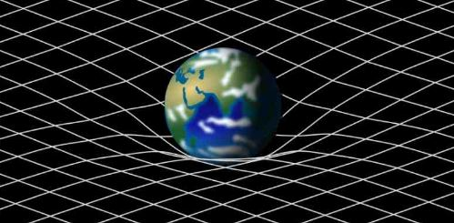

AGI
Over the past 2 years I have been researching the human brain and its structure. I believe that the human brain offers a lot in terms of architecture and process, when looking at the concept of learning. Many years ago the artificial neural network was designed, in which perceptrons (artificial neurons) were networked together in order to produce a representation of the brain. I have continued, in part down this path, learning how neurons actually learn and converting these processes into digital architectures.
A lot can be said not just for the learning processes within the brain, but for the structure of the brain. We notice that their are significant differences between regions of the brain and what signals are sent where. If we can recreate this to some basic level, we could simulate AGI.
Types of learning:
- Hebbian learning: This is believed to be a key learning function of the brain and the term plasticity. When pertubations of excitment occur, Hebbian plasticity encourges more vesicles to grow (carrying neurotransmitters) within the pre-synaptic cell wall. This in turn increases the amount of neurotranmitter molecules that cross the synapse when an axon terminal is triggered. This increases the electrical change on the neighboring neuron and increases the chance of it subsequently firing.
- Homeostatic plasticity: This function plays the part of a negative feedback loop at the synapse. While Hebbian plasticity is responsible for an increase in neurotransmitter crossing the synapse when it fires, homeostatic plasticity is responsible for ensuring that the synapse does not become saturated. It does this by introducing an inhibitor to the Hebbian process.
- Long term learning: Long term potentiation and long term depression are ways the brain can learn long term memories. These function based on the rate of activations at a synapse. The more activations in short succession, the more effective this type of learning is, with a similar effect to Hebbian learning, but long term.
When these learning types are understood at a functional level, it becomes possible to represent this in a programming function. The key problem with digital circuits and circuits that represent the brain, is that the brain runs in analogue (which can be simulated, but with severe relative performance), and the neurons in the brain can loop back on one another, which is much more difficult to recreate and 'train' in a digital environment. This is why an analogue, parallel circuit will be most optimal to recreate the architechtures of the brain. This is also why you will not likely see these architectures in modern AI as we see it today, because they simply cannot be represented at any reasonable speed.
Enter neuromorphic computing: Neuromorphic computing permits both parallel and analogue computing, and this can represent the brain to a much higher degree of accuracy. Companies such a Mythic are creating hardware architectures that will likely enable AGI on a chip one day. The computational power behind these low electrical powered architectures will likely only be surpassed by photonic chips that can recreate similar conditions to the brain, but at light speed instead of the speed of an electron, and with much less input power, or heat produced. These will very likely be the future of computing.
Photonic Computing
As mentioned in the previous section, photonic computing will have more computational power, create less heating, and be able to be integrated directly into optical networks across the globe, meaning we can not just communicate at light speed, but compute as light speed too. Currently we process 2 bits, 0 and 1, in classical computers, meaning the smallest chunk of information is in one of 2 states. With photonic computing, each of the chunks will be able to represent an infinte number of states. The consequence of this, is that in theory, an infinite number of calculations can be carried out at the exact same time. The result of this will give us real world models that can predict with extreme accuracy simulations of our future environment, medicine that no longer needs animal testing, and understanding new physics we do not yet know exists.
- More computational power
- No cooling requirement
- Highly scaleable
- Infinite computational power theoretically possible
- Real world, super accurate simulations and predictions
The capability of the quantum computer is going to be extraordinary. It will surpass what is currently possible in our world too. Quantum physics will be able to make things happen that we did not know were possible, and will probably solve some issues with ease.
Biotechnology
To reduce the health complexities on Earth and particularly for deep space travel we can address the challenge of age reduction on the human body through cellular rejuvenation. This aims to counteract cellular dysfunction and organ degeneration, providing more youthful characteristics to aged cells. One approach involves cellular reprogramming, which has the potential to convert differentiated cells back into pluripotent stem cells. This method holds promise for reversing aging-related changes in cells and tissues. Additionally, epigenetic regulation is being investigated as a way to modulate gene expression and potentially reverse age-related epigenetic changes. Another avenue of research involves the removal of senescent cells, which are associated with aging and age-related diseases. Several approaches, such as small molecules and specific antibodies, are being studied to selectively eliminate these cells.
It has been a dream of mine to live forever since my early 20's. I believe it is entirely possible. The processes are becoming well understood, and with simulations enabled via quantum computing, or just being lucky with some research, it will be possible to identify the exact mechanisms we need to manipulate in order to achieve this.
Anti Gravity
What is gravity? Do gravatons exist? Is it a result of nuclear spin? Questions that still may not be entirely agreed upon, or even identified by anyone as of yet. Is it some biased electromagnetic effect that all matter causes due to their spin? If so, then perhaps if we can harness the spin of particles, we can manipulate the effect of gravity upon them. If it another field, what is it, and how can we interact with it?
Spacetime
Spacetime is the theoretical framework that combines the three dimensions of space with the one dimension of time into a single four-dimensional concept. This was introduced by Albert Einstein in his theory of general relativity. According to this theory, spacetime is not separate and independent, but instead, it is a single unified entity where the fabric of spacetime is affected by the presence of mass and energy.
In the context of spacetime, massive objects like planets and stars create distortions in this fabric, which we perceive as gravity. This idea revolutionized our understanding of gravity, as it describes it as the curvature of spacetime caused by mass and energy. Additionally, the concept of spacetime plays a crucial role in understanding the behavior of objects in the universe, from the motion of planets to the propagation of light
Schrödinger's equation is a fundamental equation in quantum mechanics that describes how the quantum state of a physical system changes over time. It was formulated by Austrian physicist Erwin Schrödinger in 1925. The equation is used to calculate the wave function of a quantum system, which contains information about the probability amplitude of finding a particle at a given position. Schrödinger's equation is essential for understanding the behavior of particles at the atomic and subatomic levels and has profound implications for our understanding of the nature of matter and energy.